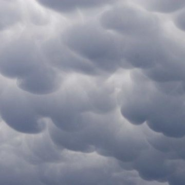

INTJ
Lenticular
Lenticular clouds are probably some of the coolest clouds to ever exist, and you're one of the coolest people to ever exist! The structured framework of the clouds matches the strategic thinking your brain does, which makes the clouds look epic and makes everything you do super amazing!
INTP

Mountain Wave
Mountain waves ride the edges of the mountain range just as you ride through endless bounds of knowledge every day (even if you don't notice!) Their wavy patterns mimic your though process as you work your way through all the cool things in the world, and who wouldn't want to know all of the amazing things in life?
INFJ
Nimbostratus
Nimbostratus clouds may seem dark and indistinguishable on the outside, but they're just as iconic as you are on the inside! These clouds bring rain and snow along with them, just like you bring creativity and inspiration along with you wherever you go! Keep your head up, you don't have to stand out to be great.
INFP
Cirrus
Cirrus clouds are delicate, soft, and pretty, just like you (come on, just accept it, you're pretty cute). Everyone loves to see them and they bring good vibes their way, just like you! You may be kind of shy and quiet, but everyone loves you! If they don't, that's on them, you're a 10/10.
ISTJ
Stratocumulus
You're reliable, dependable, and ever-present, just like the unforgettable stratocumulus cloud. They're easy to see from up above, which they should be (to truly appreciate them, you know?) Your amazing mind and soul needs to be taken in fully to be truly appreciated, because you're so complex and wonderful. Love yourself as much as everyone loves these clouds (which is a lot!).
ISFJ

Mammatus
Mammatus clouds give off nuturing and loving vibes, just like you! They're soft and most likely very plushy, seeing them puts the mind at ease (until the eventual thunderstorm follows, but who doesn't like the rain?). You're someone people go to for comfort, just make sure to take care of yourself, too.
ISTP
Supercell
Supercells are extremely interesting cloud formations, they're definitely one of a kind. Someone like you deserves something few people have seen before, something completely new and super duper cool! Also, they're massive, just like the massive amount of creativity you have coursing through you. Just don't go too crazy with the experiementation.
ISFP
Halo Clouds
Halo clouds are about as charming as you are. They glow in a way that makes them feel like they're not even clouds at all, like they're something more ethereal. You're as beautiful and lovely as these clouds, and you're definitely a rare breed (which is a good thing!). Keep being yourself, you're doing amazing.